Sumber : atourin.comz
Tentang Pantai Dato'
Pantai dato' memiliki dua karakter kawasan, yaitu area berpasir putih dan area berkarang. Salah satu daya tarik utamanya ialah batu karang berukuran besar yang dilengkapi tangga, sehingga dapat memudahkan pengunjung dalam menikmati panorama dari ketinggian. Dari atas karang tersebut, Anda dapat melihat gradasi warna laut yang memikat, yaitu perpaduan antara hijau hingga biru tua.
Galeri Pantai Dato'
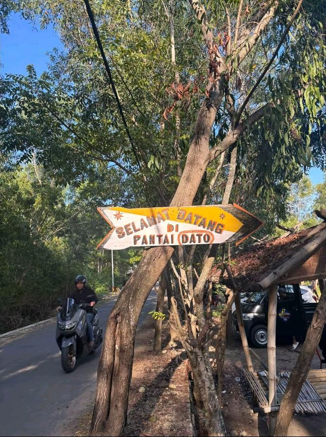
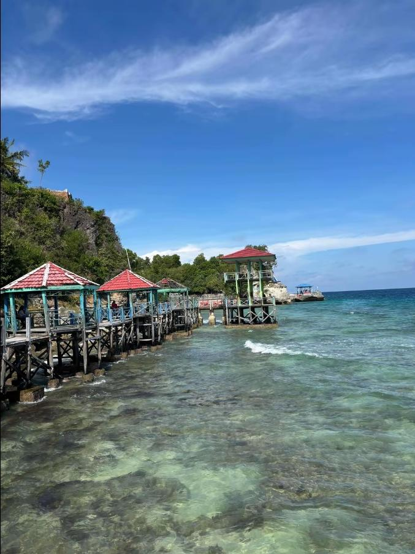
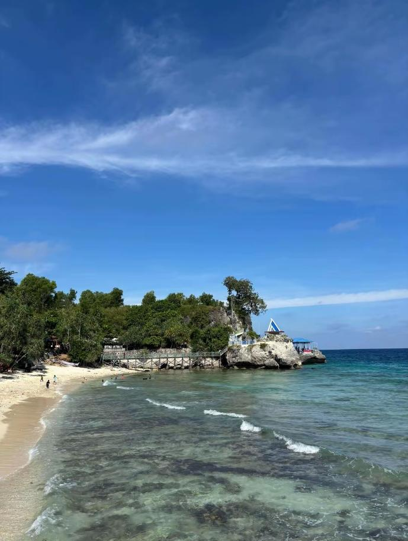
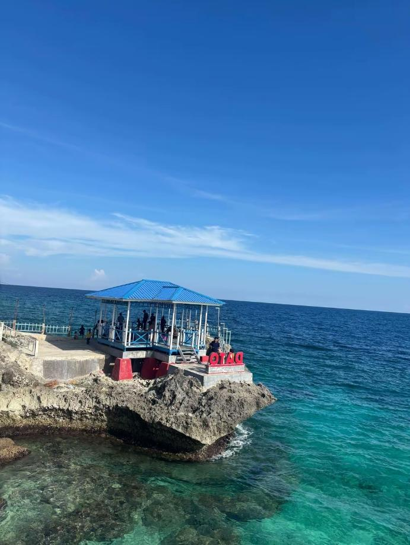
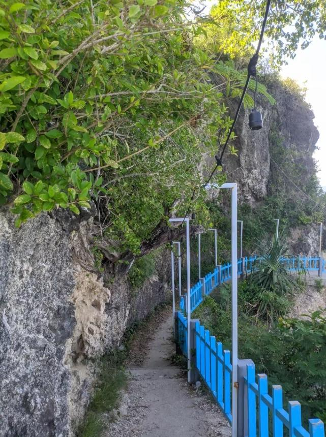
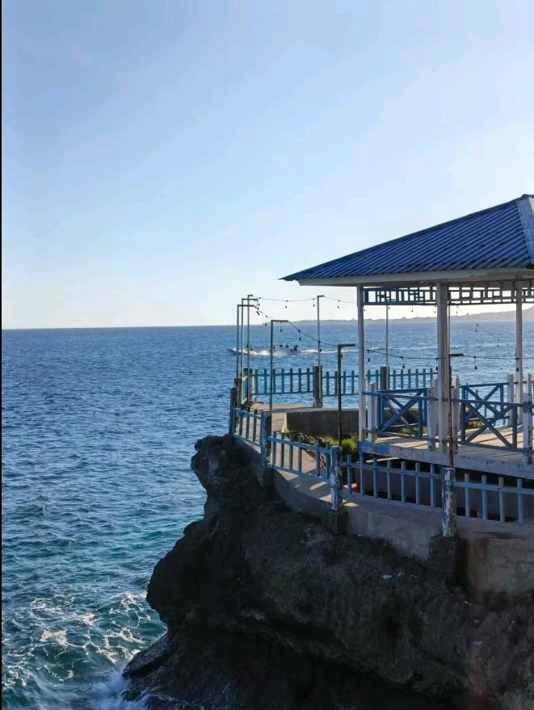
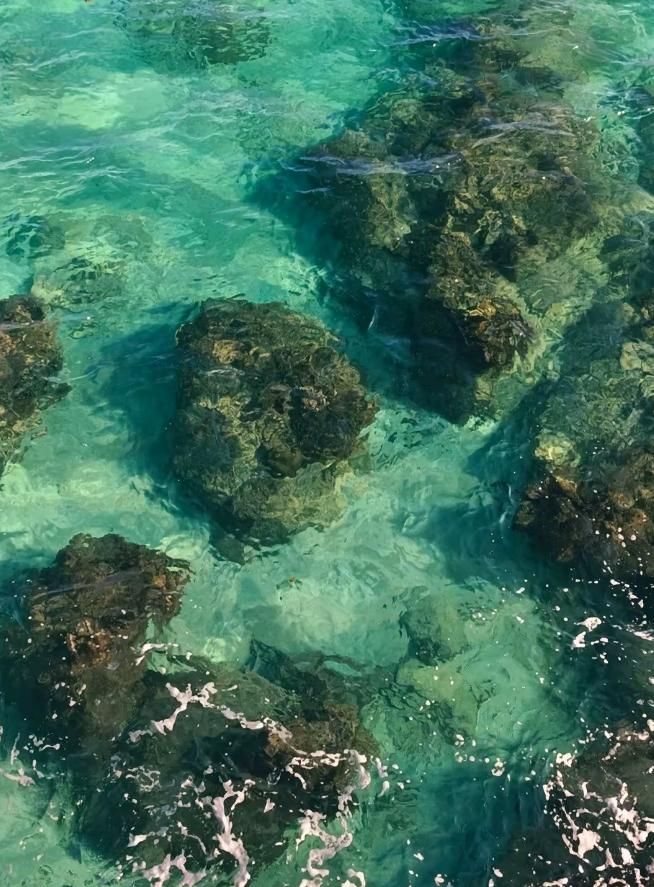
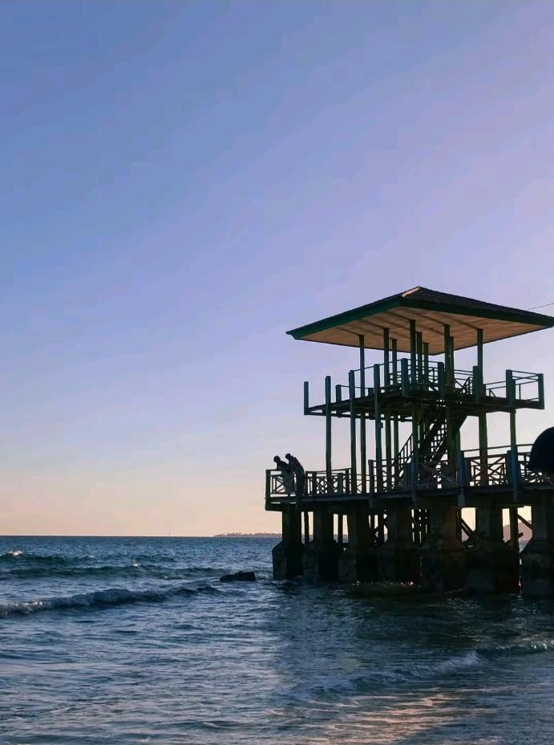
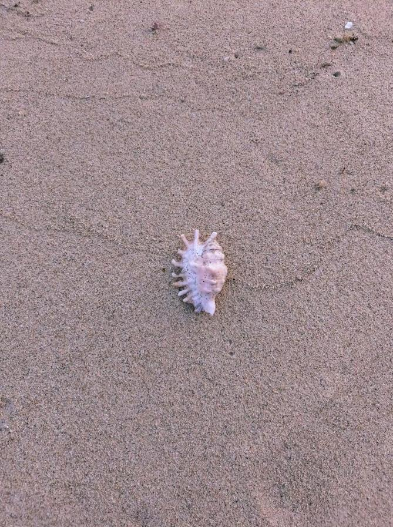
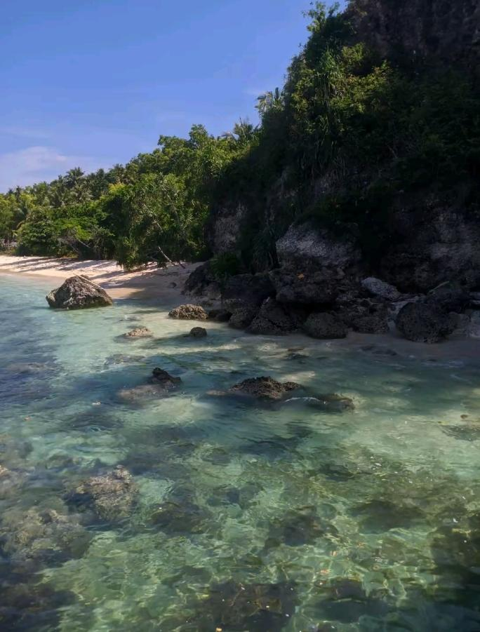
Sumber:tiktok@budimann_28, @cekcek293, @annisalunrllll
Aktivitas Yang Dapat Dilakukan di Pantai Dato'
Lokasi & Aksesibilitas
Pantai Dato' terletak di lingkungan Pangale, Kelurahan Baurung, Kecamatan Banggae Timur, Kabupaten Majene, Provinsi Sulawesi Barat. Jaraknya sekitar tujuh kilometer dari kota Majene dengan kisaran waktu tempuh 15 menit menggunakan kendaraan pribadi maupun angkutan umum pete-pete. Akses yang mudah menjadikan pantai ini sebagai salah satu tujuan favorit warga lokal maupun wisatawan yang berkunjung ke Kota Majene.
Tabel Informasi
| Informasi Utama | Detail Keterangan |
|---|---|
| Nama Destinasi | Pantai Dato' |
| Kategori Wisata | Wisata Pemandangan Alam |
| Jam Kunjungan | 06.00 - 20.00 WITA Setiap Hari |
| Kunjungan ke Area Dalam Pantai Dato' | Terbuka untuk umum saat jam operasional |
| Tiket Masuk |
|
Untuk fasilitas-fasilitas yang tersedia dapat dilihat di bawah ini :
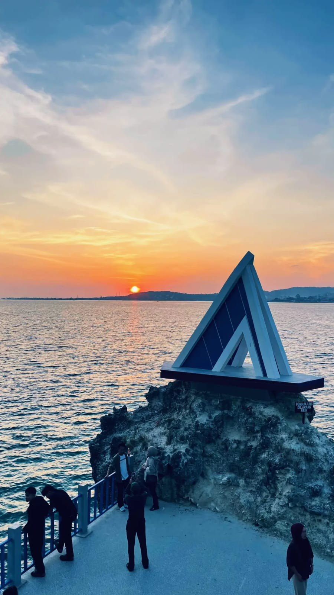
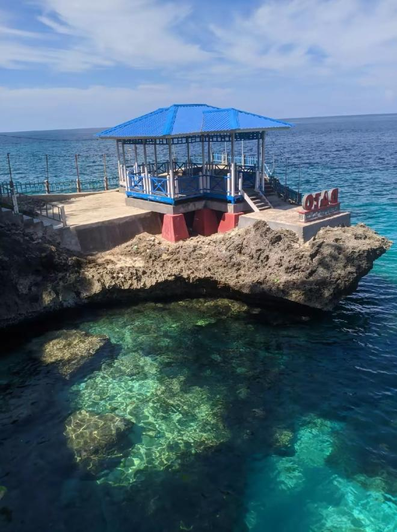
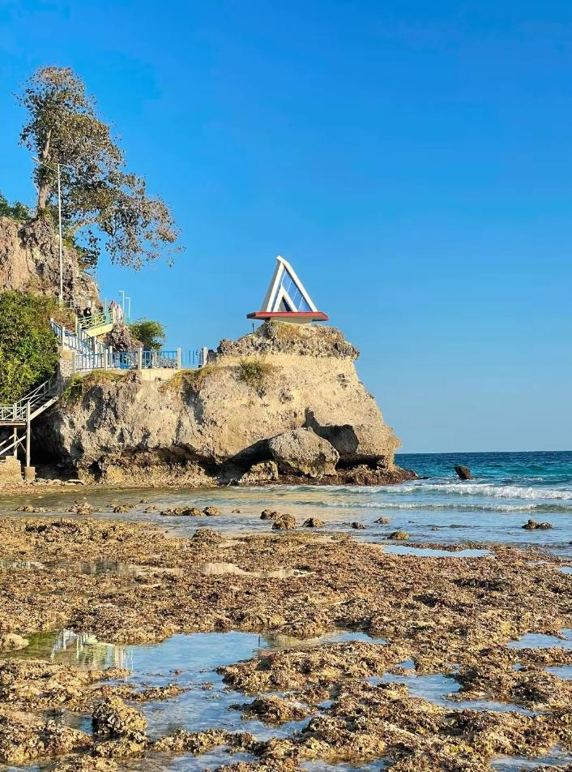
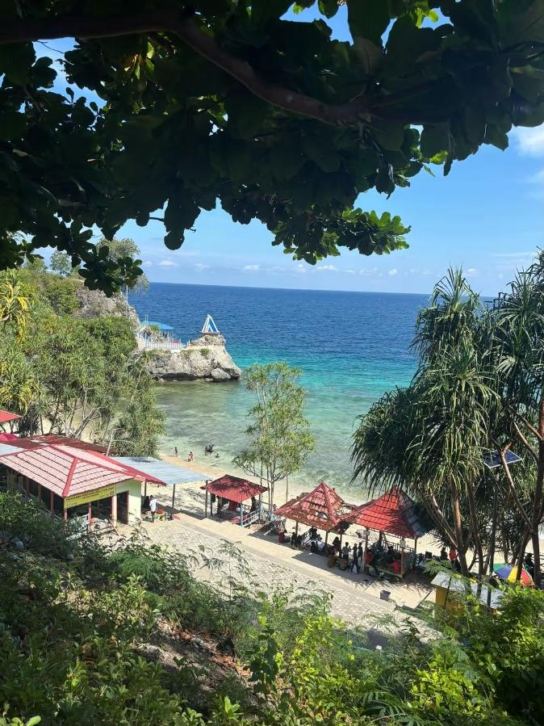
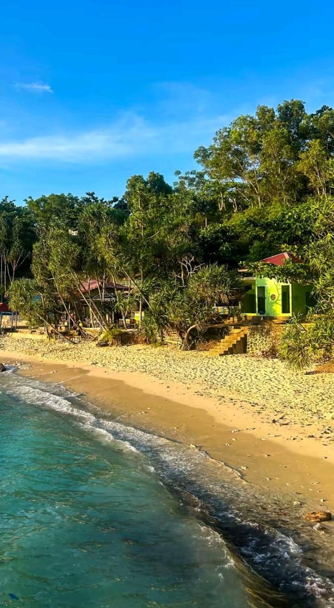
- Sumber foto : tiktok@dwi_smdra22
- sumber foto : tiktok@cekcek293
- sumber foto : tiktok@safiraalmeyyyy
- sumber foto : tiktok@budimannn_28
- sumber foto : tiktok@putriyulprista
| Fasilitas Pantai Dato' | Deskripsi Singkat |
|---|---|
| Lopi Sandeq | Lopi Sandeq merupakan perahu layar tradisional bercadik khas suku Mandar di Sulawesi Barat yang terkenal sebagai salah satu perahu layar tanpa mesin tercepat di antara perahu tradisional Nusantara. Kata "lopi" dalam bahasa Mandar berarti perahu, sedangkan "sandeq" berarti lancip atau segitiga, merujuk pada bentuk layarnya yang lancip dan lambungnya yang ramping. Sumber : Wikipedia & UNM Online Journal Systems. |
| Tulisan Dato' | Sebagai tempat spot foto utama para pengunjung yang menandakan bahwa ia pernah datang ke pantai dato' |
| Tebing Karang | Pemandangan ini memadukan antara keindahan alam dari pantai dato' yang menjadi ciri khas nya sejak lama yaitu perpaduan antara pasir putih dan batu karang. |
| Gazebo | Terdapat beberapa tempat bersantai atau beristirahat yang bisa di duduki sembari menikmati keindahan dari pantai dato. |
| Toilet | Terdapat beberapa toilet, ada di pintu masuk dua dan ada di dalam kawasan pantai dato' sebanyak dua juga |
Formulir Pengunjung
Video Dokumenter
Sumber : tiktok@shaposeh